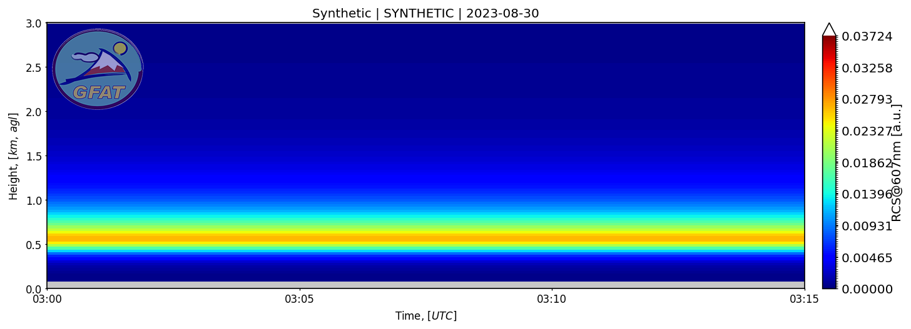
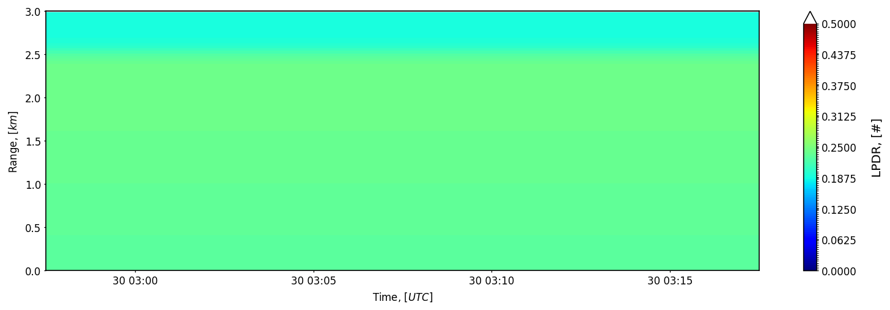

Synthetic elastic and Raman signals
import numpy as np
from lidarpy.retrieval.synthetic.generator import synthetic_signals
ranges = np.arange(30.0, 6000.0, 30.0)
elastic, raman, params = synthetic_signals(
ranges,
wavelengths=(532, 607),
ae=1.0,
lr=50.0,
apply_overlap=False,
number_of_initial_nan_values=0,
)


Klett retrieval against synthetic signal
from lidarpy.retrieval.klett import klett_rcs
from lidarpy.utils.utils import signal_to_rcs
rcs = signal_to_rcs(elastic.values, ranges)
particle_beta = klett_rcs(
rcs,
ranges,
params["molecular_beta"],
reference=(3000.0, 3500.0),
lr_part=50.0,
)Forward iterative retrieval with boundary condition
from scipy.integrate import cumulative_trapezoid
from lidarpy.retrieval.klett import iterative_beta_forward
start_height = 600.0
start_idx = abs(ranges - start_height).argmin()
initial_aod = cumulative_trapezoid(
params["particle_alpha"],
ranges,
initial=0.0,
)[start_idx]
particle_beta = iterative_beta_forward(
rcs,
calibration_factor=1e11,
range_profile=ranges,
params=params,
lr_part=50.0,
start_height=start_height,
height_top=2400.0,
initial_particle_optical_depth=float(initial_aod),
)